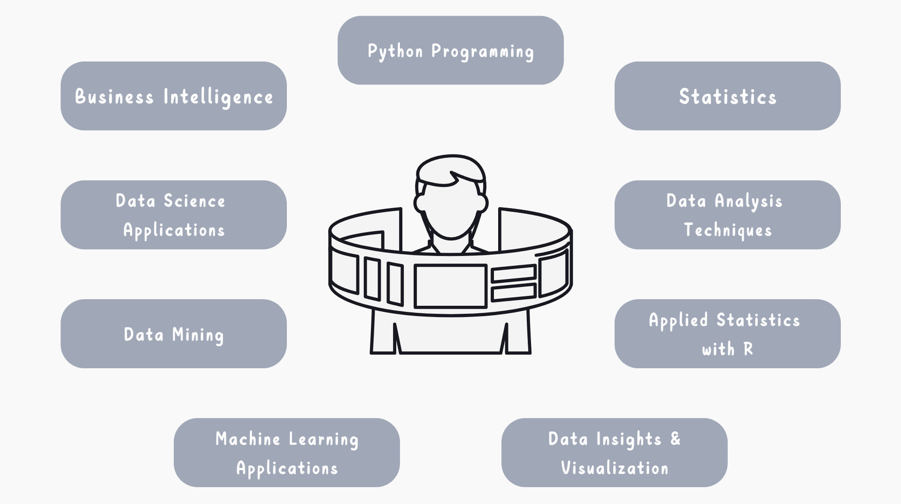
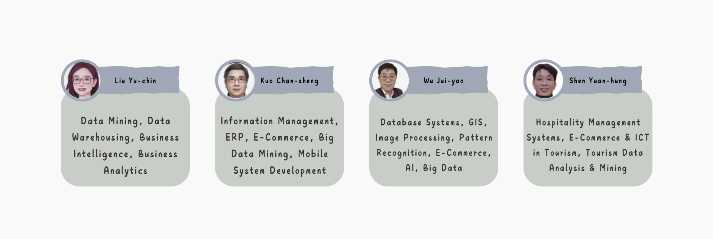

Course Introduction
In the era of intense business competition, companies are moving towards digital transformation and innovative business communication. Big data analytics allows businesses to use internal and external data for more optimized decision-making.
Shih Hsin University’s Department of Information Management fosters programming skills, grounded in business management principles, and further enhances students' data analysis abilities through project-based practice. The course content includes writing and applying programs and packages, data extraction and cleaning, training and building AI analysis models, as well as techniques for data visualization and graphical presentation.
In the graduation project course, students often combine big data, artificial intelligence, and other information product designs with business communication skills to better convey the value of their work.
Graduates typically choose to work in the data analysis departments of large enterprises. Whether specializing in data cleaning, AI model training as a data engineer, visualizing analytical results, or providing business decision-making suggestions as a data analyst, these roles offer excellent salary returns.
Course Structure

Navigator
